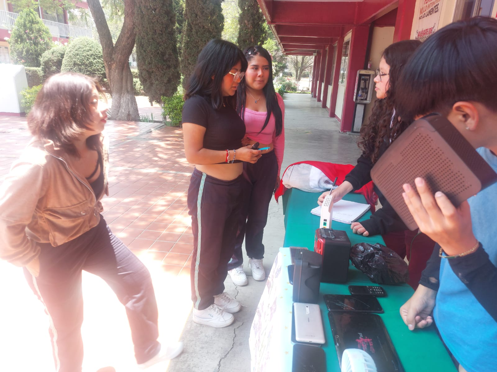

BASURA ELECTRONICA
La basura electrónica es un problema ambiental significativo, ya que los dispositivos desechados contienen materiales tóxicos y metales valiosos que pueden reciclarse. Cuando no se manejan adecuadamente, estos residuos pueden contaminar el suelo y el agua, afectando tanto al medio ambiente como a la salud humana

México genera aproximadamente 1.5 millones de toneladas de residuos electrónicos al año, pero el porcentaje de reciclaje sigue siendo bajo. Una de las principales soluciones es la reutilización y reparación de dispositivos para extender su vida útil. Además, el reciclaje adecuado en centros especializados permite recuperar materiales como cobre, oro y plata, reduciendo la necesidad de extraer nuevos recursos.